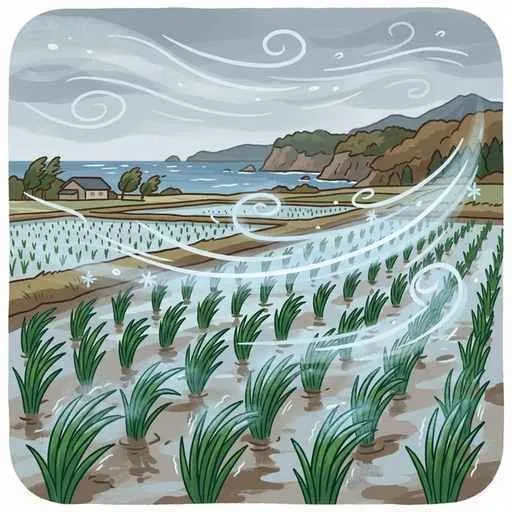
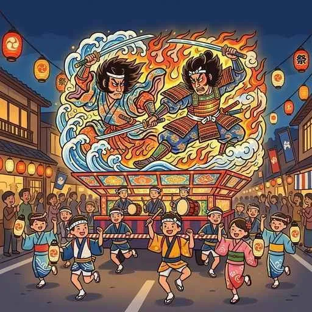

8. 東北地方
東北地方は、中央を南北に走る奥羽山脈によって日本海側と太平洋側に分かれ、気候や農業が大きく異なります。夏に冷害をもたらす風「やませ」を克服した稲作、果物大国としてのプライド、山地や海岸の豊かな恵み、伝統的な工芸品と高速道路網を活かした工業、そして夏を彩る有名な伝統祭りまで詳しく解説します！
1. 東北の自然環境と「やませ」の冷害
日本の背骨と呼ばれる山脈や、世界的に貴重なブナの森、そして夏の冷たい風が特徴です。

図1：夏に太平洋側から吹く、冷たく湿った北東風「やませ」のイメージ
- 奥羽山脈（おううさんみゃく）：東北地方の中央部を南北に走る、日本最長の山脈。「日本の背骨」とも呼ばれます。
- やませ（最重要！）：初夏から夏にかけて、冷涼なオホーツク海高気圧から太平洋側に吹く、冷たく湿った北東の季節風です。これが長期間吹くと日照時間が不足し、気温が上がらずに米などが育たない「冷害（れいがい）」を発生させます。
- 白神山地（しらかみさんち）：青森県と秋田県にまたがる山地。世界最大級の広大なブナの原生林が人の手を入れずに残されており、世界自然遺産に登録されています。
- リアス海岸と潮目（しおめ）：太平洋側に面した三陸（さんりく）海岸の南部は、出入りの複雑なリアス海岸が発達しています。その三陸沖の海は、南からの暖流（黒潮）と北からの寒流（親潮）がぶつかる「潮目（潮境）」となっており、栄養や魚の種類が極めて豊富な世界有数の好漁場です。
2. 日本屈指の米所と「果物王国」の農業
寒さや冷害への対策を重ね、日本を代表する食料供給地へと進化を遂げました。
- 東北の稲作（米作り）：夏に比較的温暖で晴れが多い日本海側の庄内（しょうない）平野や、太平洋側の仙台平野などは、あきたこまちやササニシキなどを育てる日本有数の米所です。冷害に強い品種改良が盛んに行われてきました。
- 名産の果物栽培：
- 青森県（津軽平野）：昼夜の寒暖差を活かした「りんご」の生産量が全国一です。
- 山形県（山形盆地）：水はけが良い扇状地を利用した「さくらんぼ」の生産量が全国一です。
3. 伝統工芸から近代的な工業団地へ
古くから伝わる鉄や漆の技術と、高速道路の開通に伴う近年のハイテク工場の誘致が同居しています。
- 地元の職人が受け継ぐ伝統的工芸品：
- 南部鉄器（なんぶてっき）：岩手県盛岡市や奥州市で作られる、重厚で味わい深い鋳物の鉄器。
- 将棋の駒：山形県天童（てんどう）市が生産量日本一を誇る、伝統的な工芸品です。
- 漆器（しっき）：福島県の「会津塗」や青森県の「津軽塗」などの美しい漆塗りの器。
- 高速道路と工業団地：東北地方は、かつては工業があまり盛んではありませんでしたが、東北自動車道などの高速道路の整備に伴い、インターチェンジ（IC）の周辺に「工業団地」が相次いで開発され、輸送の利便性から自動車や電子機械などの組み立て工場が多く進出しました。
4. 夏を彩る「東北四大祭り」
厳しい冬の生活を乗り越え、短い夏を一気に楽しむための華やかな伝統祭りが各地で開催されます。

図2：巨大な灯籠の山車が夏の夜に光り輝く「青森ねぶた祭」
- 青森ねぶた祭（青森市）：竹や針金、和紙で作られた武者などの巨大な人形灯籠（ねぶた）を引き、「ラッセラー」の掛け声で跳人（ハネト）たちが乱舞する祭り。
- 秋田竿燈まつり（秋田市）：稲穂に見立ててたくさんの提灯を吊るした長い竹竿（竿燈）を、額や腰、肩などに乗せてバランスを取る妙技を競う祭り。
- 仙台七夕まつり（仙台市）：毎年8月に開催。伝統の和紙を用いた豪華絢爛な吹き流しなどの飾りでアーケード街が埋め尽くされる祭り。
- 山形花笠まつり（山形市）：紅花をあしらった花笠を持った踊り手たちが、「ヤッショ、マカショ」の軽快な掛け声で踊る祭り。
🔥 定期テスト対策・暗記のコツ
① やませと冷害の記述（超頻出！）
「やませとはどのような風か？また何を引き起こすか？」➔「初夏から夏にかけて、オホーツク海方面から吹く冷たく湿った北東の風。長期間吹くことで日照不足と低温による冷害を引き起こす。」と完璧に答えられるように暗記してください！
② 三陸沖の好漁場の理由
「三陸沖が良い漁場（世界三大漁場の一つ）となる理由は？」➔「南からの暖流（黒潮）と、北からの寒流（親潮）がぶつかる潮目（しおめ）があり、魚の餌となるプランクトンが非常に豊富だから。」と海流の名前を交えて説明できるようにしましょう。
③ 東北の作物・工芸・祭りの暗記
「青森 ➔ りんご・ねぶた祭」「山形 ➔ さくらんぼ・将棋の駒（天童）・花笠まつり」「岩手 ➔ 南部鉄器」「秋田 ➔ 竿燈まつり」「宮城（仙台） ➔ 仙台七夕まつり」の組合せは、テストで得点源になるので整理しておきましょう！